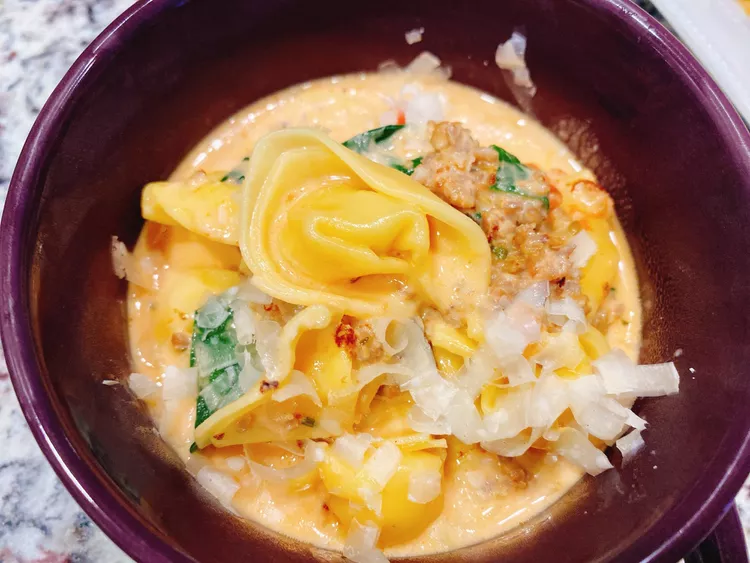

Creamy Tortellini Soup with Spinach and Boursin

Description:
This creamy tortellini soup cooks in one pot for a fuss-free recipe. Italian sausage and Boursin cheese amp up the flavor.
Ingredients
- 1 pound bulk Italian sausage
- 14 ½ (14.5 ounce) cans diced tomatoes, drained
- 9 ounces refrigerated cheese tortellini
- 1 cup vegetable broth
- ¾ cup evaporated milk
- ¼ cup heavy cream
- 1 (5.2 ounce) package garlic and herb cheese spread (such as Boursin®), softened
- 4 cups baby spinach
- Italian seasoning to taste
- 2 tablespoons freshly grated Parmesan cheese, or to taste
Steps:
- Cook sausage in a large stockpot over medium heat, crumbling and breaking up with a spatula, until evenly browned, about 5 minutes.
- Stir in tomatoes, tortellini, vegetable broth, evaporated milk, heavy cream, and Boursin cheese.
- Bring to a simmer; cook, uncovered, until tortellini float to the top and the filling is hot, about 8 minutes. Stir in the spinach; cook until wilted, about 2 minutes. Season with Italian seasoning and Parmesan cheese.
All Recipes source